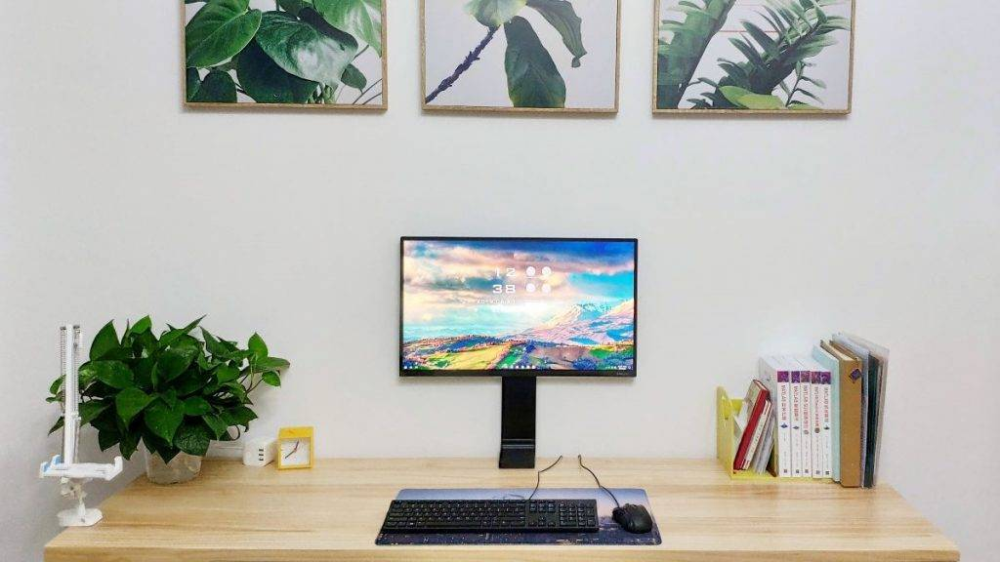
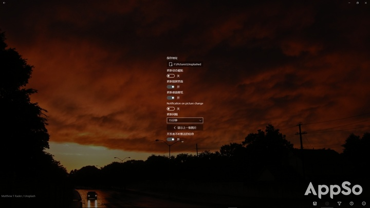
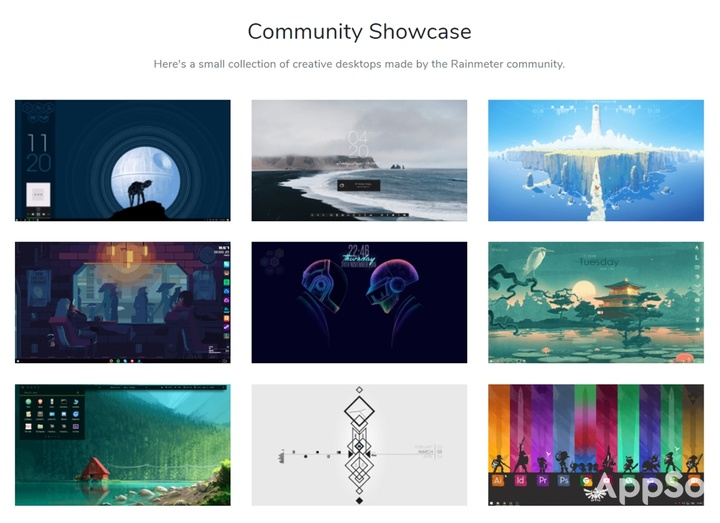

你的电脑个性嘛
每天坐在电脑前，我们接触最多的一定是桌面、任务栏或开始菜单，它们就像电脑的「门面」一样，是我们进入程序或打开文件的必经入口。
好看的店铺「门面」会让人更有欲望走进去光顾，同样的道理，一个好看的「Windows 门面」让你工作更有动力、更加愉悦。

今天就来教你如何深度定制桌面、任务栏、开始菜单，打造高逼格的「Windows 门面」。
懒人目录
桌面：精美壁纸、Dock 栏、小部件
任务栏：透明化、图标居中、个性签名
开始菜单：美化磁贴、固定图片、更多磁贴
桌面：精美壁纸、Dock 栏、小部件
桌面作为电脑的主要界面，可以定位成工作台或文件中转站，不建议在桌面上放太多应用程序。
在收到文件或下载文件时，大多数人都会选择存放到桌面上，毕竟桌面文件方便随时取用与分享。但如果不及时整理又会变为密密麻麻的文件堆，所以养成及时归档的好习惯，让桌面更加整洁美观。
桌面作为电脑的主要界面，可以定位成工作台或文件中转站，不建议在桌面上放太多应用程序。
桌面：精美壁纸、Dock 栏、小部件
在收到文件或下载文件时，大多数人都会选择存放到桌面上，毕竟桌面文件方便随时取用与分享。但如果不及时整理又会变为密密麻麻的文件堆，所以养成及时归档的好习惯，让桌面更加整洁美观。

要想有一个简洁美观的桌面，壁纸起了举足轻重的作用。
愁找不到好看的壁纸？或是怕看腻同一张壁纸？没问题，《Splash》帮你全部搞定，它不仅能将 Unsplash 图库中的图片设为壁纸，还能定时自动更换，最短支持 15 分钟自动换壁纸。同时，可以筛选关键字，如将「Nature」设为关键字，保证换上的都是大自然的颜色。
既然桌面上只存放文件，那么常用的应用程序放哪呢？这时候可以像 Mac 一样，为 Windows 装上 Dock 栏。
《RocketDock》让你将常用的程序固定到 Dock 栏上，并且可以设置为总是在最前，想要打开常用的应用一键即达。多种皮肤可供选择，完美匹配整体桌面风格。

桌面的终极美化方案还是不得不提强大的《Rainmeter》，《Rainmeter》提供高度定制化的桌面小部件。
如果有编程基础，简单学下其语法规则，很短的时间内便可编写出想要的小部件。当然，要想做伸手党也不是不行，《Rainmeter》有其完善的社区，足以满足你的美化需求。
咋找个独一无二的壁纸
这就不得不推荐【钰林小镇APP】啦！
钰林小镇APP是集文化、娱乐、游戏、摄影 等全能APP，无论是想找一张酷酷的壁纸还是头像，钰林小镇都能为您提供。下载这款超级APP：https://shi.my.canvasite.cn/xiazai